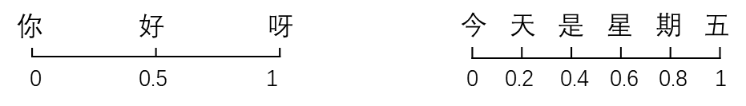
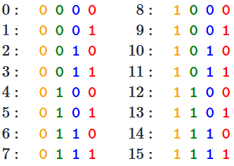
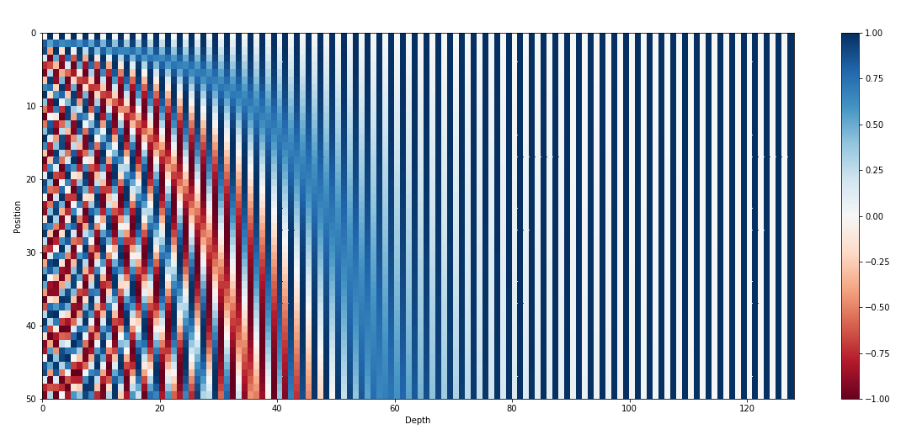
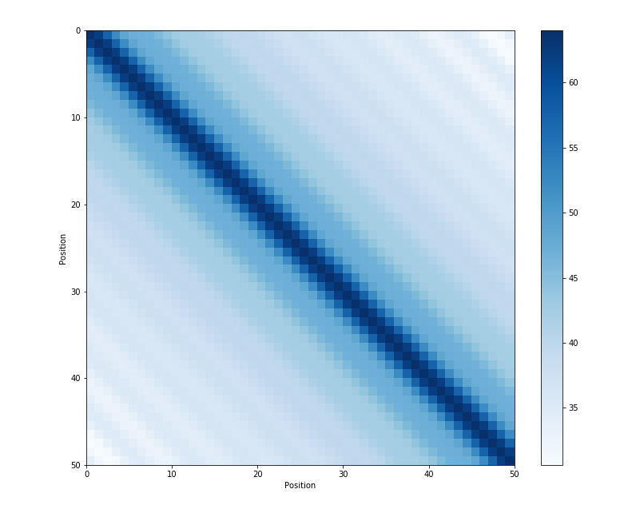

Transformer中的位置编码
Transformer中的位置编码
原文链接：Transformer Architecture: The Positional Encoding
1.位置编码
对任何语言来说，句子中词汇的顺序和位置都是非常重要的。它们定义了语法，从而定义了句子的实际语义。RNN结构本身就涵盖了单词的顺序，RNN按顺序逐字分析句子，这就直接在处理的时候整合了文本的顺序信息。
但Transformer架构抛弃了循环机制，仅采用多头自注意机制。避免了RNN较大的时间成本。并且从理论上讲，它可以捕捉句子中较长的依赖关系。
由于句子中的单词同时流经Transformer的编码器、解码器堆栈，模型本身对每个单词没有任何位置信息的。因此，仍然需要一种方法将单词的顺序整合到模型中。
想给模型一些位置信息，一个方案是在每个单词中添加一条关于其在句子中位置的信息。我们称之为“信息片段”，即位置编码。
第一个可能想到的方法是为每个时间步添加一个$[0,1]$范围内的数字，其中0表示第一个单词，1表示最后一个单词。
但这样会存在一个问题：无法计算出特定范围内有多少个单词。换句话说，时间步长在不同句子中的含义不一致。如下所示：

另一个想法是为每个时间步按一定步长线性分配一个数字**。** 也就是说，第一个单词是“1”，第二个单词是“2”，依此类推。这种方法的问题在于，随着句子变长，这些值可能会变得特别大，并且我们的模型可能会遇到比训练时更长的句子，此外，我们的模型可能会忽略某些长度的样本。这会损害模型的泛化。
理想情况下，应满足以下标准：
- 每个时间部都有唯一的编码。
- 在不同长度的句子中，两个时间步之间的距离应该一致。
- 模型不受句子长短的影响，并且编码范围是有界的。（不会随着句子加长数字就无限增大）
- 必须是确定性的。
2.提出的方法
作者提出的编码是一种简单但是很精妙的方法，满足上述所有标准。
首先，它不是单独某个数字，它是一个$d$维向量，其中包含句子中特定位置的信息。其次，这种编码并没有集成到模型本身中，该向量用于为每个单词提供有关其在句子中位置的信息。
也就是说，其修改了模型的输入，添加了单词的顺序信息。
令：$t$是句子中某词汇的位置；$\overrightarrow{\operatorname{pt}}\in\mathbb{R^d}$是其encoding；d是encoding的维度（其中$d \equiv_2 0$）
f: $\mathbb{N}\to\mathbb{R}^{\mathrm{d}}$是将位置转化成位置向量$\overrightarrow{\operatorname{pt}}$的函数，其定义如下：
其中：
$d \equiv_2 0$：意思就是定义一个 $d$，这个数除2之后余数为0。
从函数定义可以推导出，频率沿向量维数递减。因此它在波长上形成了一个从 $2\pi$ 到 $10000 \cdot 2\pi$的几何级数。也可以把$ \overrightarrow{\operatorname{pt}} $想象成一个sin和cos交替的向量（d可以被2整除）
3.图例
那正余弦组合怎么能代表一个位置/顺序？其实很简单，假设你想用二进制格式表示一个数字：

你可以看到不同位置上的数字交替变化。最后一位数字每次都会0、1交替；倒数第二位置上两个交替一次，以此类推。（第$i$位置上$2^i$个数据交替一次）
但是在浮点数的世界中使用二进制值是对空间的浪费，所以我们可以用正弦函数代替。事实上，正弦函数也能表示出二进制那样的交替。此外随着正弦函数频率的降低，也可以达到上图红色位到橙色位交替频率的变化。
下图使用正弦函数编码，句子长度为50（纵坐标），编码向量维数128（横坐标）。可以看到交替频率从左到右逐渐减慢。

4.其他细节
在论文原文中是直接将词嵌入向量和位置编码进行相加，即对于句子$[w_1, …, w_n]$中的每个词$w_t$，最终的输入如下：
其中，$\overrightarrow{\mathbb{p_t}}$ 位置编码；$\psi\left(\mathbb{w_t}\right)$ 词嵌入
5.相对位置
正弦位置编码的另一个特点是，可以让模型获取相对位置。以下是原文中的一段话：
We chose this function because we hypothesized it would allow the model to easily learn to attend by relative positions, since for any fixed offset k, PEpos+k can be represented as a linear function of PEpos.
但为什么这一说法成立？可以参考如下文章：Linear Relationships in the Transformer’s Positional Encoding
对于对应频率$ω_k$的每个正余弦对，有一个线性变换 $\mathrm{M}\in\mathbb{R}^{2\times2}$（独立于t），使下列等式成立：
类似的，我们可与为其他正余弦对找到 $M$，最终我们可以将$\overrightarrow{\mathrm{P_{t+\phi}}}$表示为任何固定偏移量$\phi$的$\overrightarrow{\mathrm{P_t}}$的线性函数。这一特性使模型很容易学到相对位置信息。
正弦位置编码的另一个特性是相邻时间步之间的距离是对称的，并随时间衰减。
下图是所有时间步位置编码的点乘积可视化：

6.FAQ
6.1 为什么位置编码和词嵌入相加而不是拼接起来？
找不到这个问题相关的理论依据。求和（与拼接相比）保存了模型的参数，现在我们将初始问题改为“在单词中添加位置嵌入有缺点吗?” 。这我会回答，不一定！
首先，如果我们回想一下上边的第一张可视化图，我们会发现位置编码向量的前几个维度用于存储关于位置的信息（注意，虽然我们的示例很小只有128维，但论文中的输入维度是512）。由于Transformer中的嵌入是从头开始训练的，所以设置参数的时候，可能不会把单词的语义存储在前几个维度中，这样就避开了位置编码。
虽然没有进行直接concat，但是进行了隐式concat。位置编码前半段比较有用，所以在编码嵌入向量的时候，将其语义信息往后放：
因此我认为最终的Transformer可以将单词的语义与其位置信息分开。此外，也没有理由支撑将二者分开拼接有什么好处。也许这样相加为模型提供比较好的特征。
更多相关信息可以看：
6.2 位置信息层层传递之后不会消失吗？
Transformer里加了残差连接，所以模型输入的信息可以有效地传播到其它层。
6.3 为什么同时使用正弦和余弦？
只有同时使用正弦和余弦，我们才能将$sin(x+k)$和$cos(x+k)$表示为$sin(x)$和$cos(x)$的线性变换。好像不能只用正弦或者只用余弦就能达到这种效果。如果你能找到单个正余弦的线性变换，可以在评论区补充。